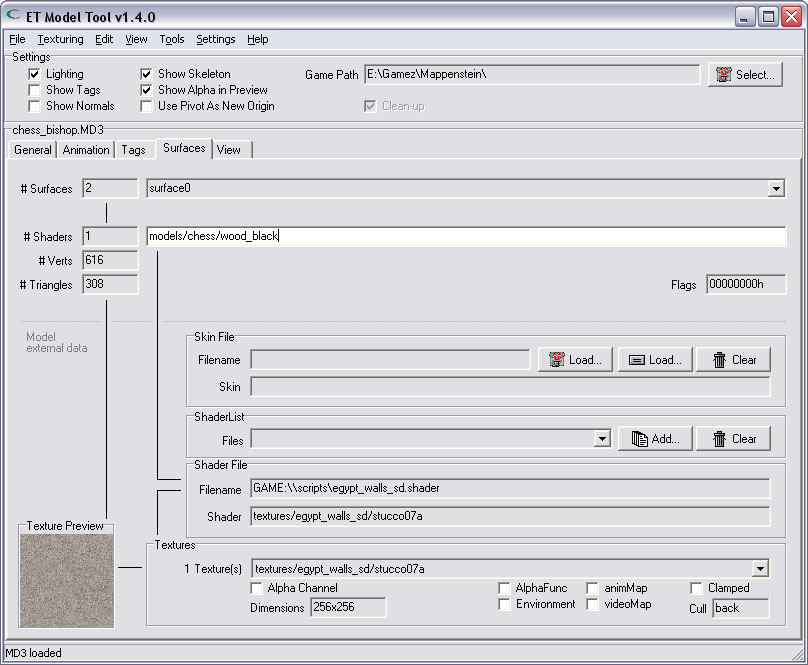
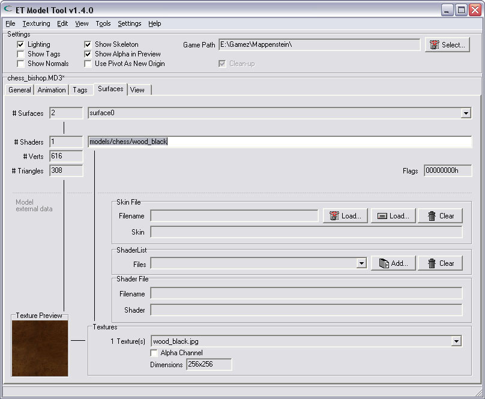

It's also possible to type-in the path/name to a texture.
If the new shader can be found, it will be displayed immediately in the tool.
| Changing the shader of a surface | |
| It is very easy to change the shader of a surface. Switch to the 'Surfaces'-Tab where You find the textedit with the path & name of the shader. | |
| |
| Changing the entry | |
| You can type-in the apropriate path & name of the new shader. It's also possible to type-in the path/name to a texture. | |
|  | |
| Confirming the changes | |
| The entry will only be changed after You have pressed the ENTER-key to confirm the changes You made. If the new shader can be found, it will be displayed immediately in the tool. | |
|  | |